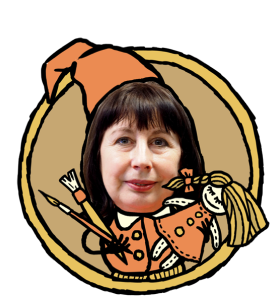

С детства мечтала стать художником, ну или актрисой на крайний случай. Но волею судьбы
сначала стала педагогом. Оказалось — это очень интересно! И создание в 2003 году детской
«Школы кукольного дизайна» — удачное обьединение моего творческого и педагогического опыта,
возможность поделиться и передать ученикам то, что умею сама. На занятиях у нас очень
тихо... и не потому, что я строгая... а потому, что вдохновение — частый гость, а оно любит
тишину...
В школе занимаются около 40 детей в возрасте от 7 до 16 лет.
ДиректоР, ХуДоЖнИк
Президент Маленькой Страны, вдохновитель и
первооткрыватель, художник, педагог, декоратор, реставратор и т. д. С детства мечтала
стать художником, ну или актрисой на крайний случай. Но волею судьбы сначала стала
педагогом. Оказалось — это очень интересно!
ХуДоЖнИк
С детства мечтала стать художником, ну или актрисой на
крайний случай. Но волею судьбы сначала стала педагогом. Оказалось — это очень
интересно! Президент Маленькой Страны, вдохновитель и первооткрыватель, художник,
педагог, декоратор, реставратор.

ХуДоЖнИк, пеДАГоГ
Президент Маленькой Страны, вдохновитель и
первооткрыватель, художник, педагог, декоратор, реставратор и т. д. С детства мечтала
стать художником, ну или актрисой на крайний случай.
АДминИстрАтор, ЭксКуРсовоД
С детства мечтала стать художником, ну или актрисой на
крайний случай. Но волею судьбы сначала стала педагогом. Оказалось — это очень
интересно! Президент Маленькой Страны, вдохновитель и первооткрыватель, художник,
педагог, декоратор, реставратор и т. д.
АктЁр, рЕжисСЁр
Президент Маленькой Страны, вдохновитель и
первооткрыватель, художник, педагог, декоратор, реставратор и т. д. С детства мечтала
стать художником, ну или актрисой на крайний случай.
ХуДоЖнИк, пеДАГоГ
Я задержалась в детстве…
Вернее, я туда вернулась. Уходила ненадолго, а потом вернулась... Десять лет учила
малышей рисовать, пытаясь изображать серьезную «тетю-педагога». Получалось плохо... Дети
принимали за свою. Наверное, что-то подозревали. Вечерами я играла в куклы... Оказалось
— это очень интересно!